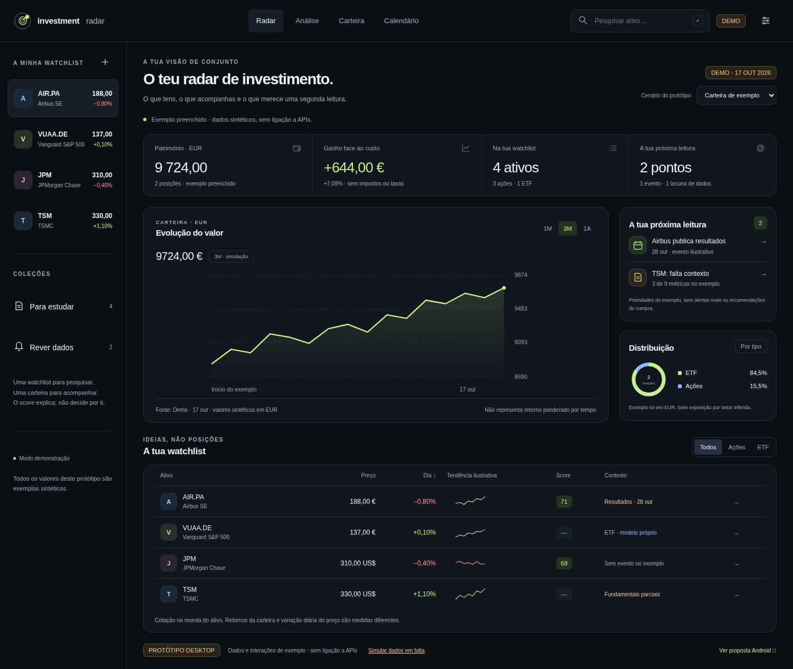
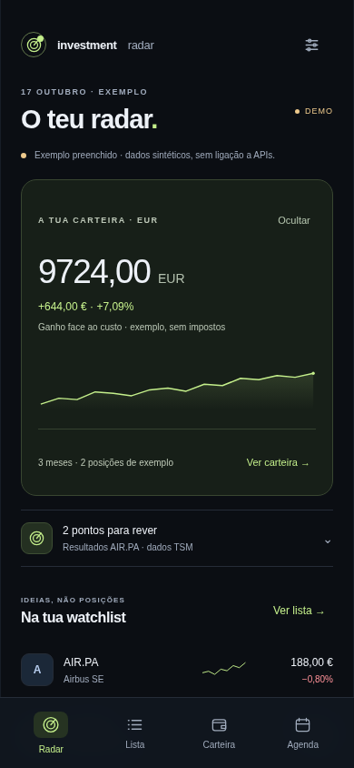

Um espaço de trabalho para investigar no Windows. Um radar para acompanhar no Android. Linguagem visual comum, organização própria para cada dispositivo.

Património e evolução em destaque, prioridades com contexto, distribuição e watchlist filtrável. A ficha de análise continua a um clique.
Abrir protótipo desktop →

Resumo de carteira com privacidade, pontos a rever e lista por toque. Uma composição própria para o telemóvel.
Abrir protótipo Android →
Fontes, datas e cobertura acompanham o score. Sem botões de compra ou promessas de retorno.
Cenários preenchido, vazio, indisponível e cache antiga. Valores desconhecidos ficam como “—”.
HTML/CSS/JS sem bibliotecas ou pedidos externos. As propostas não escolhem por si a framework Android.
Referências de produto indicadas: MiTRADE, TradingView, Yahoo Finance e Dribbble. Pesquisa verificada: screenshots públicos de Ghostfolio e Wealthfolio, código de Wealthfolio/Lightweight Charts e README de Portfolio Performance. Consultar relatório de pesquisa. Todos os valores e interações apresentados são de demonstração.